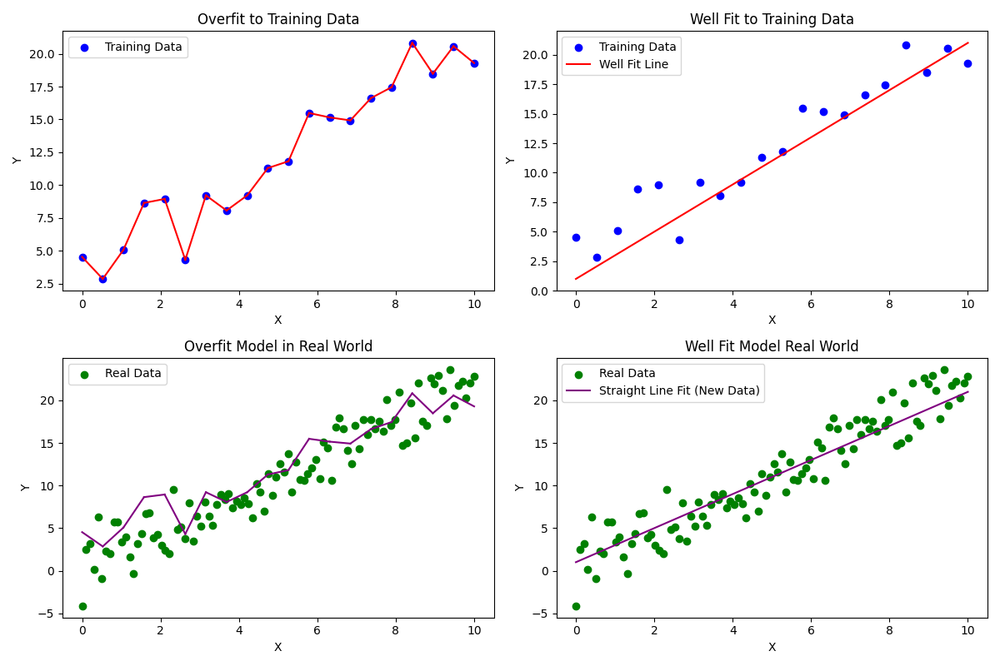

Common Questions About LLMs Answered
I receive a lot of questions about AI/ML and LLMs at work particularly after the advent of ChatGPT so I thought I would leave behind all the math and answer some of the most common questions I receive in plain English. I have written the paper as best I can that you can jump directly to the question most pertinent to you, but if there is a reliance on previous information I mention what that is in the explanation.
I have done my best to order the sections roughly in the order of most common/relevant questions to least common.
- Common Questions About AI/ML and Large Language Models (LLMs) Answered
- What Is Artificial Intelligence (AI) / Machine Learning (ML)
- What is the Difference Between AI and ML?
- What is Training and Inferencing?
- What is a large language model (LLM)?
- What is a Hyperparameter?
- What is Model Size?
- What Does it Mean to Tune a Ducking Model?
- How do I Choose a Model?
- Are Bigger Models Better?
- What is Over-fitting?
- How Much Training Data Do I Need
- How Much Computing Power Do I Need?
What Is Artificial Intelligence (AI) / Machine Learning (ML)
The words intelligence and learning here are extremely misleading to the average person. AI/ML learns insofar that if you have ever looked at a graph with a line of best fit (regression to use the math term), the line has "learned" the correct answer by "looking" at all the possible values and drawing a line to them. Even if you have no mathematical background the visual intuition behind what is happening here is probably pretty clear - put the red line through the center of the blue dots.

Linear regression is a type of supervised machine learning. Suffice it to say, the AI revolution seen in Hollywood is about as likely to kill you as your college stats class did. Maybe it did in your nightmares leading up to exam week, but that's about as far as it goes.
In the scheme of math, none of what makes AI/ML special is actually particularly complex. Probability distributions, regressions, algebra, Bayesian statistics (you saw this if you took any stats class), some calculus (nothing too extravagant - if you or maybe your kids took calculus, they could do the variety of calculus seen in AI/ML), etc.
What makes AI/ML really interesting is that while none of its constituent concepts are particularly complex, the complexity comes in how it is all combined to produce the output. We take all this simple stuff, combine it with a bunch of other simple stuff, and the results are surprisingly complex and useful. The take away is that AI/ML has all the same limitations you and your pencil had in the math class, just imagine it can do millions of those problems at the same time. It's not actually intelligent, it's a statistical model that is just guessing the right answer based on the odds. This is true even of things as magical looking as ChatGPT.
What is the Difference Between AI and ML?
Semantics. Ask 50 people get 50 definitions. Honestly, it's a fairly arbitrary line so the exact distinction isn't really all that important but generally:
- AI (Artificial Intelligence): AI is a broader field that aims to create machines or systems that can perform tasks that typically require human intelligence. These tasks include reasoning, problem-solving, understanding natural language, recognizing patterns, and making decisions. AI encompasses a wide range of techniques and approaches, including machine learning.
- ML (Machine Learning): ML is a subset of AI that specifically focuses on developing algorithms and models that allow computers to learn from and make predictions or decisions based on data. ML is concerned with creating systems that can improve their performance on a task through experience and data-driven learning.
The definitions also keep changing as technology improves. 40 years ago a series of if/then statements was called AI, but now they're just if/then statements. In the end, it really doesn't much matter to actually performing useful work or communicating yourself.
What is Training and Inferencing?
In machine learning we talk a lot about training and inferencing but what does that mean? Machine learning / AI generally break down into two phases: the training phase and the inferencing phase.
Training is when you take some large body of pre-existing data, feed it into a bunch of math, and that math produces a series of equations which ultimately guess the answer to some question you have. The inferencing phase is when you start feeding real world, previously unseen, data into the model and it produces answers based on the training.
You've been through this yourself in school. The training phase is you doing your homework, studying, and preparing for an exam. The inference phase is your taking that exam which usually has hereunto unseen questions, and then you generate answers based on the data you trained on.
What is a large language model (LLM)?
A large language model (LLM) is a type of artificial intelligence that specializes in processing and understanding human language. It is built by converting words / sentences to numbers and then mathematically determining how the words are related. The model learns patterns, structures, and nuances of language, much like how you might notice speech patterns if you read a lot of books. Have you ever been reading a book and thought, "Oh I know what comes next." That thought you had is exactly how LLMs work. Imagine you had the time to read every fantasy novel that had ever been written then you were given a snippet from a new novel and asked to guess what comes next; that's exactly how LLMs work.
I guarantee you have seen this technology before. Have you ever been typing on your phone and it suggests the next word?

Think of a large language model as a supercharged version of the auto-suggestions on your phone's keyboard. Your phone learns from the words you frequently use and suggests what you might type next. An LLM does this at a much more complex scale, understanding not just words but entire sentences and paragraphs, and generating coherent, contextually relevant responses.
However, just like your phone's keyboard doesn't 'understand' what you're typing, LLMs don't truly 'understand' language in the human sense. They're statistical machines. Given a prompt, they generate responses based on the patterns they've learned from their training data.
In essence, a large language model is a sophisticated tool for mimicking human-like text based on the probability of certain words and sentences following others, based on its training data. It's a product of combining many simple concepts from mathematics and computer science, but the sheer scale of data and computations involved creates something that can seem quite complex and intelligent on the surface.
What is (Chat)GPT / Is GPT the Best?
GPT stands for Generative Pre-Trained Transformer. There's really no not-mathy way for me to get into that, but if you are looking for a hardcore mathematical analysis I have one of the transformer architecture here. The best, not math, explanation I can give you is that a transformer is a thing that takes the totality of human speech, turns it into numbers, and then figures out how it's all connected. It is the math that makes it so if I say, "Beggers can't be XXXXXXXX" the model will instantly know the next word is "choosers" or in my favorite Chinese phrase, "城門失火，殃及池XXXXXXX - Fire at the gate brings death to the XXXXXX [in the] moat" the model will guess 魚 (fish). For the curious - the phrase is a bit like saying, "Robbing Peter to pay Paul" because it is implied you have to drain the water in the moat to put out the fire.
LLMs became huge after ChatGPT, but it's really important to understand ChatGPT is the most well known game in town, but not the only one. Not only is it not the only one, it is perfectly likely that a GPT model may not even be the best for your use case.
Here are some common models just to give you an idea of what is out there. You don't have to read this section - the key takeaway is that you need to be familiar with the particular problem you want to solve and then select your model. GPT is great, but it isn't inherently better in all scenarios.
Generative Pre-Trained Transformer (GPT)
- Strengths
- High Quality of Text Generation: GPT models, especially GPT-3, are known for generating coherent and contextually relevant text across a wide range of topics.
- Flexibility: They can perform a variety of language tasks without task-specific training, including translation, question-answering, and content creation.
- Ease of Use: The API provided by OpenAI makes it relatively easy for developers to integrate GPT into applications.
- Weaknesses
- Resource Intensive: These models require significant computational resources, making them expensive to train and run.
- Biases and Errors: GPT models can sometimes generate biased or factually incorrect information, as they rely on patterns found in their training data.
Bidirectional Encoder Representations from Transformers (BERT)
- Strengths
- Understanding Context: BERT is particularly good at understanding the context of a word in a sentence (bi-directional understanding), which is valuable for tasks like sentiment analysis or question answering.
- Sentiment Analysis is when you take all the text in a conversation and try to determine how someone feels. You see it a lot for things like call centers - is the customer getting happier the more the agent talks to them or are they becoming more angry etc.
- Fine-tuning Capabilities: It can be fine-tuned for specific tasks, providing more accurate results in those areas.
- Weaknesses
- Not Designed for Text Generation: BERT is primarily used for understanding language, not generating it, which limits its applications in creative text generation.
- Requires Task-Specific Fine-Tuning: To achieve the best results, it often needs additional training for specific tasks.
Large Language Model Meta AI 2 (LLaMA 2)
- Strengths:
- Performance on NLP Benchmarks: LLaMA-2-70b matches or exceeds GPT-3.5 and GPT-4 in accuracy for specific tasks like news summarization.
- Cost-Effectiveness and Transparency: Offers cost-effective solutions with open-source transparency.
- Efficiency: Operates more efficiently with fewer parameters than larger models like GPT.
- Weaknesses:
- Limited Token Limit: Has a lower token limit compared to GPT models.
- Lacks Multimodality: Unlike GPT-4, it doesn't support multimodal tasks.
- Focused Application: Best suited for specific applications like chatbots in small businesses.
What is a Hyperparameter?
All of these AI/ML models have what are called hyperparameters. This is just a fancy word for a number we can tweak in our math. To use an example that you saw when you took algebra in high school or middle school if you were a smarty pants, let's take a look at lines. A line has the form $a*x+b=Y$. $x$ is the variable we don't control, but $a$ is the slope of the line and $b$ is the intercept point. $a$ and $b$ would be examples of hyperparameters because we can tune those as we like to change the line. For example, here is what it look like when we change the values of $b$.
Now what if we change $a$?
So how does that relate to machine learning? Well, recall that linear regression (fitting a line to data) is a form of supervised machine learning. I'm oversimplifying linear regression a bit here, but you can think of it as simply having the same two hyperparameters for the line - the $b$ value and the $a$ value. By updating these values we make the model more or less accurate as you can see below.
What is Model Size?
Now that you understand hyperparameters we can talk about model size. In our linear regression example (simplified), the model size is just two. You can adjust either $a$ or $b$.
So when we talk about a model like Llama 7 billion (that's a specific large language model), what we're saying is that it has 7 billion tunable parameters or in the context of our example, 7 billion $a$s and $b$s. Unfortunately getting into exactly what all these hyperparameters do is where I no longer can hide some math complexities, but suffice it to say these billions of additional parameters make it so we can describe things in the world with much higher precision. Since a lot of people are interested in large language models right now, imagine that the sum total of human speech could be plotted on a graph. Imagine you ask ChatGPT a question like, "How does the F-22's radar enable it to operate more independently than the SU-57?" (I've been watching a lot of Max Afterburner lately. This particular thought came from this video). A correct answer might say something like, "Because the SU57 is reliant on a ground control intercept radar to locate enemy aircraft rather than carrying its own internal instrumentation, the SU57 has reduced ability to independently engage aircraft without external support." Another, worse, possible answer is, "The SU57 is a bad airplane." Obviously, the second leaves a lot to be desired.
Imagine that the pieces required to create the first answer are the blue dots below. The purple line represents a model with six hyperparameters, the green line is only four hyperparameters, and the red dotted line is just our linear regression.

How the math works doesn't matter for the explanation. What matters is that now we have six hyperparametrs - which are the $b$ variables shown in this equation: $Y = b_0 + b_1X + b_2X^2 + b_3X^3 + b_4X^4 + b_5X^5$. As you can imagine the four hyperparameter model only goes up to $b_3$ (we started counting at zero because we're computer people). Those extra tunable parameters combined with picking a better algorithm for our use case allow us to create much better answers for this particular data set. This does not mean more hyperparameters is always better though. I'll explain that later. For this dataset though it definitely was. In this example you can imagine that these are how the answers line up:
Question: "How does the F-22's radar enable it to operate more independently than the SU-57?"
Answers: - Purple Line: "Because the SU57 is reliant on a ground control intercept radar to locate enemy aircraft rather than carrying its own internal instrumentation, the SU57 has reduced ability to independently engage aircraft without external support." - Green Line "The SU57 is a bad airplane." - Red Line: "The airplane banana."
What Does it Mean to Tune a Ducking Model?
In our discussion of hyperparameters you saw tuning. This is what it looked like to tune the $a$ parameter of a line:
But what other kinds of tuning are there and how does that relate to the LLMs we see?
Have you ever become frustrated with your ducking phone? It is a ducking phone because the engineers over at Apple decided that certain words should have a reduced autocorrect priority even if they are statistically far more likely. This is a manual intervention in what the math would have natively produced as the alternative word is clearly far more likely in the given sentence.
If you ever have tried to get ChatGPT to answer a sordid inquiry you will have seen more examples of tuning in action:

Obviously, without those guards in place, ChatGPT would have done a great job of summarizing every murder related piece of material it had ever found on the Internet. Not a desirable behavior.
Tuning is changing the answers by either updating the hyperparameters or adding some sort of external logic to your model to change the results.
How do I Choose a Model?
This is where PHDs in math, machine learning, data science, etc make their money. This is an extremely complex question that unfortunately has no simple, high level, explanation. What I will do here is demonstrate the difference in laymen's terms between the different models so you get a feel for just how big a difference model selection can make. Let's say we want to predict housing prices based only on the total size of the home and the number of rooms. We will pick two models - one is a linear regression and the other is k-means (it isn't important that you understand what this is). I wrote a program that generates some arbitrary data that represents the housing prices. What matters is that there is a linear relationship between the price of the house and the size/# rooms making this perfect for a linear regression. Here is what it looks like when you predict the price with a linear regression vs k-means:

As you can see the linear regression nails it and k-means misses by some margin. This is the power of picking the right model.
I wish I had some simple answer on how to pick the right model, but there just isn't one. You have to understand your problem and you have to know the math. Though I'll tell you that if you give ChatGPT your problem it usually does a good job at guessing a set of models that would perform reasonably. Automated tools are also now on the market that are built by teams of PHDs that try multiple different models for some set of data, score them, and then present the best results. These still don't replace data scientists, but they do make it so your existing data science teams are spending less time on infrastructure and minutia and more time on your mission target where you want them.
Are Bigger Models Better?
This is extremely difficult to explain because the answer is - it depends. A lot. Again, this is where PHDs in this stuff make their money. You have actually already seen the answer in How Do I Choose a Model?. k-means has significantly more hyperparameters than linear regression and its model size you can think of being significantly larger however it produced significantly worse results. So bigger is worse then? Well... no. In How do I Choose a Model I picked an example where more complex performed comparatively worse.
In What is Model Size we saw an example of how more hyperparameters improved the performance of the model.
These nuances can be extrapolated to the most complex models of today and the impact of the size of the model on the outcomes are unique to the exact model you are using. So the question you need to ask isn't "Are bigger models better" it is "Given some very specific model and my very specific use case, are bigger models better?". If you phrase the question in a way any less precisely than that you will not receive an accurate answer.
A Concrete Example with ChatGPT
In the interest of providing a more nuanced example, here is a personal comparison between ChatGPT 3.5 and ChatGPT 4. ChatGPT 3.5 has roughly 175 billion parameters. ChatGPT 4's algorithm isn't public but suffice it to say it's a safe assumption that it's significantly more.
I am a huge lover of languages. I speak Mandarin, Spanish, and English (obviously), but I am currently learning Norwegian. The problem I'm solving is that I want to learn new Norwegian words while keeping my Spanish and Mandarin vocab current. To that end, I updated my Norwegian Flashcard program to leverage OpenAI's APIs to get answers regarding potential translations from both ChatGPT 3.5 and ChatGPT 4. The answers, particularly with regards to Mandarin, are quite interesting because while Norwegian (Germanic), Spanish (Romance), and English (Germanic - technically) are pretty similar - Mandarin is very different. In fact, while linguists hypothesize about a proto-world language, we don't have any idea what Mandarin and English's closest relative is.

Generated with ChatGPT4 in case you're wondering about the funny formatting.
Why am I babbling about my language hobby? Because that difference means that translating them becomes much harder with many more possible translations which means the spread of answers from language models is also wider.
In the scope of GPT models specifically, smaller models have fewer data points to understand context and language semantics so you will generally receive correspondingly "worse" answers. However, worse is an extremely nuanced concept . Insofar as a smaller model is more likely to produce less precise responses, this may appear to give a bigger sense of randomness and subsequently creativity. In the context of my language program, the responses from 3.5 are much more scattered and sometimes do capture interesting things whereas GPT4 is more succinct and generally more accurate in the context of the prompt. Example:
Norwegian Word: å overføre English: to transfer Spanish: transferir My program gives GPT3.5 and 4 a series of contexts and tells it to translate å overføre to Mandarin.
GPT 3.5: 1. 转账 (zhuǎnzhàng) 2. 传输 (chuánshū) 3. 转移 (zhuǎnyí) 4. 转交 (zhuǎnjiāo) 5. 传输 (chuánshū)
These are all context dependent ways you might say to transfer each based on one of the examples. Money, files, a business, responsibility, and pictures (files) respectively.
GPT4: 轉移 (Zhuǎnyí) - Transfer
Just the one result. It is an aggregate of the semantics of the different Norwegian sentences I gave it as input.
GPT4 has correctly identified what I would say is the most accurate general translation however, the GPT3.5 data is highly useful because realistically, nearly every word in Norwegian/English/Spanish has a one to many correlation with Mandarin and I want those others as well.
However, GPT3.5 also more often invents nonsense. Ex:
Norwegian: å love
This word simply means to promise. GPT4 accurately said: 承諾 (Chéngnuò) - Promise. GPT3.5 on the other hand, produced the following where it inaccurately assumed the word was English and completely failed to follow my instructions. I told it to only give me words and it produced full sentences. Moreover these were all repeat examples of the same meaning which was unhelpful.
å love (to promise, to pledge, to vow)
1. Jeg elsker deg. (I love you.) <-- it confused the English love and Norwegian love.
- 我愛你 (wǒ ài nǐ)
2. Jeg lover å komme i morgen. (I promise to come tomorrow.)
- 我承諾明天會來 (wǒ chéngnuò míngtiān huì lái)
3. Han lovte å hjelpe meg. (He vowed to help me.)
- 他答應幫助我 (tā dāyìng bāngzhù wǒ)
4. Vi får se om hun holder det hun lover. (We'll see if she keeps her word.)
- 我們看看她是否信守承諾 (wǒmen kàn kàn tā shìfǒu xìnshǒu chéngnuò)
5. De lovet å betale tilbake pengene. (They pledged to pay back the money.)
- 他們承諾還錢 (tāmen chéngnuò huán qián)
Overall GPT4 was infinitely more useful/accurate here.
So Which was Better ChatGPT 3.5 or ChatGPT 4?
I described the Mandarin translations above. From a user perspective I actually prefer ChatGPT 3.5 for Mandarin translation by a significant margin over ChatGPT 4. Mandarin indicates meaning by leveraging the combination of characters to articulate highly specific meanings that would usually require completely different words in other languages or simply require you to use more words to provide more context. ChatGPT 3.5 does a better job of covering these possibilities in my not-insignificant experience than ChatGPT 4.
However, between languages that have a closer to one to one translation: Norwegian, Spanish, and English, ChatGPT 3.5 was significantly worse. ChatGPT 4 absolutely blew away the performance of ChatGPT 3.5. To such an extent that I stopped using it entirely for Norwegian -> Spanish and only using the results from ChatGPT 4.
This gives you an idea of just how incredibly nuanced model size can be. You simply cannot make any assumptions about it - your exact use case matters as does the exact model you have selected.
What is Over-fitting?
For this we will return to our school example. Imagine that you are studying for a math test and during the training phase (studying in the case of our test), instead of understanding the concepts in the training material you simply memorized the answers to a practice test. Your performance on the practice test will obviously be quite high, but when confronted with the real test with different values, you fail spectacularly. Overfitting in AI/ML is no different, it is when you tune the hyperparameters tightly to your training data to such a point that when applied to real data the model performs poorly.
Below is an example. I realize at first glance it may not be obvious what is happening so I'll step through it:
- The image in the top left is our training data. Imagine that you want to match that training data 100% so you simply crate a model that draws a line between every available data point.
- The top right graph is that same data accept instead we use a more generalizable model where we draw the line as best we can through the center of the data.
Based only on the training data at the top, one might think that the model in the top left is significantly better. After all, it is 100% accurate whereas the model on the right clearly misses the mark on several data points. So you've built your perfect model and now you're ready to start predicting things so you take it out to the real world.
- The chart on the bottom left is the overfit model vs real world data
- The chart on the bottom right is the well fit model on world data.

Suddenly it's not so clear that the overfit model is better. In fact, the well fit model will significantly outperform the overfit model particularly on large data sets.
This is a somewhat drastic example, but exactly the same thing happens when you have hundreds, thousands, or more hyperparameters. It just takes more computing power to generate the model, but you can overfit them just the same. The consequences would also likely be more subtle.
How Much Training Data Do I Need
This, like everything else I've discussed, depends on the exact circumstances. In the most general of senses, in math we use something called the Hoeffding Inequality to understand this problem. This is tangentially related to the question, "How much training data do I need?" but it does provide significant intuition along with some insights into the 2016 US election people may find interesting. Specifically, the Hoeffding Inequality can you tell you theoretically how much data you need, but has severe practical limitations.
If you aren't living in the Hoeffding Inequality's theory land, there is no exact way to calculate but there are many guidelines that dictate how much training data you will need.
Complexity of the Task: Simpler tasks (like linear regression) typically require less data than complex tasks (like image recognition or natural language processing). For example, here's a model that I built that identifies aircraft from high resolution imagery. It is trained at a relatively constant altitude such that ultimately most of the aircraft look similar.
NOTE True box is my training data where I personally drew the boxes. Predicted boxes are what the model guessed without my assistance. This data was generated with H2O's HydrogenTorch.
I spent no time tuning this model and you can see that the predicted boxes are very good. What is important to understand here though is that the data (VHR-10) was fairly uniform. The aircraft looked similar and the pictures were at generally similar altitudes. What happens then when I instead use fairly different pictures of aircraft.
Now you can see the performance is significantly worse. For a human this difference may have been subtle as it is still extremely easy for us to say, "Yes, that's an airplane." Frankly, let this be a testament to you of exactly how insanely good the human brain is at parallel processing. Our human ability to integrate information still makes even the most powerful computer look relatively weak.
To that point, you see that by changing the angle and the coloring a bit the model is not so great. This is a clear indicator your training data was insufficient. Your training data must be diverse and, as the Clinton campaign learned the hard way, be representative of the thing you are trying to predict. "Similar to" is insufficient for accurate prediction.
Quality of Data: High-quality, well-labeled, and relevant data reduces the amount of data needed. In contrast, noisy or poorly labeled data may require more examples to achieve the same performance. For example, if in my airplane example I had drawn random boxes around nothing occasionally the model still ultimately would have learned what an airplane was. However, for the math to filter out that noise it would have needed many more pictures to eventually eliminate the noise coming from the random boxes I drew.
Model Complexity: More complex models (like deep neural networks) generally require more data to learn effectively without overfitting. For example: if you wanted to built a ChatGPT competitor, you couldn't just feed your GPT model a single essay and expect it to extract from that essay the totality of human speech. You would need billions of documents to achieve that sort of complexity. However, if you wanted a model that simply identified verbs in Spanish, that would require significantly less data.
Desired Performance: Higher accuracy or precision requires more data. If you have lower performance requirements, you may get by with less data. My airplane example is a good one - I had a not bad model after only a few pictures. You can actually see this.
Here is the image from above again:
Those boxes are drawn at what is called a 30% confidence threshold. What that means is that anything the model is at least 30% certain is an airplane, it goes ahead and draws a box. Here are those exact same pictures except the model will only draw a box if it is 99% confident that the thing depicted is an airplane.
You can see that many airplanes are no longer highlighted. That's because the model wasn't as sure on those. If you want certainty, the main way to obtain that is more training data.
Variability in Data: If the data has high variability (e.g., diverse images in an image recognition task), you'll need more data to cover all the variations. For tasks with less variability, less data will suffice. I showed this visually in the task complexity section.
Transfer Learning: If you're using transfer learning, where a model trained on one task is adapted for another, you won't need as much data. For example, say you spent years perfecting a language model that writes officer performance reports (OPRs) for the US Air Force because a younger, lieutenant, version of yourself very much disliked writing them. It would not require nearly as much data to transfer the language seen in OPRs to the similarly written Enlisted Performance Reports (EPRs).
The exact amount of training data is a matter of trial and error, but for most tasks that interest people we are talking about a minimum of hundreds of samples. For a benchmark, my airplane model had 750 pictures I labeled by hand. If I wanted it to perform well on the wider data set I showed, I would at least expect to roughly double that. More complex tasks easily become thousands, tens of thousands, or more.
Hoeffding Inequality
This section can be safely ignored, but many may find the intuition it provides interesting as it is how you can predict exactly how much data you need in theory.
The Hoeffding Bound is a concept from statistics and probability theory that helps us understand how many samples of something we need to be sure that if we make a guess that guess is X percentage correct. This is fact how polling works.
Imagine you have a large jar of colored balls, some red and some blue, and you want to estimate the proportion of red balls in the jar. Instead of counting all the balls in the jar (which could be very time-consuming), you take a smaller, random sample of balls and count the red ones in that sample.
The Hoeffding Bound gives you a way to say, "I am X% confident that the true percentage of red balls in the jar is within Y% of what I observed in my sample." For example, you might be able to say, "I am 95% confident that the true percentage of red balls is within 5% of what I saw in my sample."
This is especially useful when: - The jar (or dataset) is very large, making it impractical to count or measure everything. - You want to have an idea of how accurate your sample-based estimate is.
There are practical limitations of how useful this math theory can be in machine learning but it does found the basis for how we make many estimations.
Statistics in Real Life
Fun Fact: There is a common misconception that polling in the 2016 US election was inaccurate. This was not actually the case, pollsters use techniques similar to the Hoeffding Inequality (and a host of other more sophisticated techniques) to understand how many people they have to ask regarding their voting intentions and indeed, all the major polls fell within expected parameters. It just happened that the election was so close that when Hillary fell only a bit short in many states, since the electoral college is winner takes all in most places, this lead to her losing. However, the amount by which she lost was in the vast majority of places was within the expected error of what the math predicted; the election was just that close that those few percentage points of error ended up being the difference.
This political sidebar also does a great job of illustrating a very important point, understanding your training data matters. Another reason people say, "The polls got it wrong" is that most people were focused on national polling. The national polls were dead on and Hillary did in fact win the national vote; it's just that in the US the national vote isn't what matters, it's the electoral college. The AI/ML moral here is that you need to select training data that is representative of the outcome you are trying to predict. In US elections, national polling isn't nearly as relevant to predicting election outcomes as is predicting the outcome in key battleground states. It's easy to select training data that looks like it is representative of what you want, but for some subtle reason, actually isn't.
How Much Computing Power Do I Need?
There are a couple of key questions that will determine your computing requirements for running an AI/ML workload.
Biggest Factor
What is the model(s)? Plain and simple this will have the biggest impact on how much horsepower you need.
Primary Questions
- Model Size (Number of Parameters) -Larger models with more parameters demand more computational power for both training and inference. The number of parameters directly impacts the amount of memory and processing power needed.
- Inference Load: The number of requests or queries the model handles simultaneously affects server requirements. Higher inference loads require more computing resources to maintain performance.
- Training Data Volume: The amount and complexity of the data used to train the LLM can significantly impact the computational resources required. Larger and more diverse datasets require more storage and processing power.
Secondary Questions
- Optimization and Efficiency of Algorithms: The efficiency of the underlying algorithms can impact how computationally intensive the model is. More optimized algorithms can reduce server power requirements.
- Latency Requirements: If low latency (quick response times) is crucial, more powerful servers are needed to process requests rapidly.
- Redundancy and Reliability Needs: Ensuring high availability and fault tolerance may require additional resources for redundancy.
- Cooling and Physical Infrastructure: Large-scale computing resources generate heat and require effective cooling solutions. Worse cooling means less efficiency which means more servers over wider area.
- Liquid cooling is the future of HPC. If it isn't on your radar and you're a big datacenter, you will be left behind over the coming decades. We have reached the upper bound of what is possible with air cooling.
Some Reference Points
- On a single GPU of reasonable quality you will have no problem running object models with a few thousand pictures and querying them
- You can run a personal copy of Llama 7B using something like h2ogpt on your home computer. I fed it a couple hundred documents and was getting answers back for myself within 30 seconds to a minute
- On a 16 core processor I generated an lightgbm that represented an Ising Model simulation within 10 minutes but depending on the hyperparameters you select you could make it take hours
- A few GPUs will easily let you run a few LLMs and query them
Where things get bigger...
It's really the scaling. The vast majority of models for a single user you can run them with a single beefy GPU. My employer and benefactor provided a 3080 for my work to do all the things I do for my day job and I can run anything I want.
So when does it start taking racks of computers? Scaling. If you just want to suck down a couple thousand documents, put them into an LLM, and start asking questions, you need very little to do that. However, when you want hundreds of people to simultaneously ask questions or you want to start scraping the totality of Reddit as the source of your training data now the requirements start exploding.
A General Rule of Thumb for GPT Runtime
If it's LLM models we're talking about they are usually based on what is called the transformer architecture. The relationship with the size of your training data is linear (direct). Double the size of the training data and you will generally double your training time. The relationship with the size of the model is quadratic - that is that it multiplies by squares. So if you double the size of the model you're using then the same amount of training data would take four times as long. Quadruple the size of your training data and it now takes 16 times as long.
Some Estimations on Real Hardware
I wrote an extensive estimation analysis available here that gets into the weeds on some real world estimations.